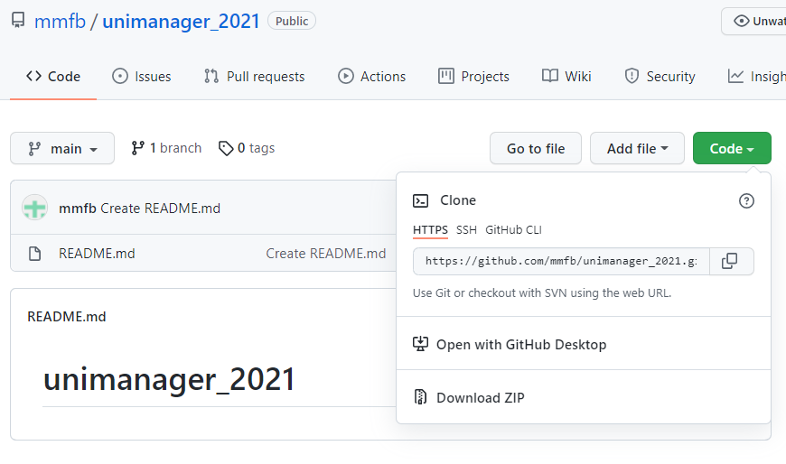

Objectives
Understand the architecture of a restfull web application
Installing node.js, express.js and other support applications
Setting up localhost Node.js/Express.js application
Other objectives
Setting up a database on a Node.js/Express.js application
Using version control with git, github and fork
Setting up a online Node.js/Express.js application using HerokuApp
Creating a postgres database on Heroku and configuring the Node.js/Express.js application to use it
Index
1- The architecture of a restfull web application
The following image will try to summarize all the components of a web application, their relations, and the corresponding resources/concepts.

-
At the top right you see two IDE (Integrated Development Environment) used to create code and manage databases:
-
Visual Studio Code Editor for code, including all things web ( HTML, CSS, Javascript, etc)
You can also get Notepad++ - Also and editor for any type of text file – lighter and good for quick modifications: https://notepad-plus-plus.org/downloads/
-
Database Client Application Applications to manage and develop databases, they will depend on the database used. Examples:
-
-
Bellow the IDEs, connect to the DB Client you see the databases. This constitutes the base of the three tiers that usually constitute a web application: Database | Server | Client .
For local server you can use a local or a remote database, but for an online server you will need a remote database, because it would be really hard to connect to the local server.
-
In the top middle you see a depiction of the Node.js/Express.js server. The server is divided in two parts:
- Web Pages Server Will serve HTML, CSS, Javascript and other files (ex: images) to the browser clients
-
REST API Server Will serve data requested by web pages on the browser (using AJAX and JSON) and could also serve data to other applications (using JSON).
Since the REST API is responsible to manage data, only this part of the server will communicate with the database.
-
In the top left side you see the client side:
-
Browser Browsers like chrome, safari or edge will need web pages composed by HTML, CSS, images, etc. All these files will be sent by the Web Pages Server.
Some of these pages will also need data. These pages will have javascripts that will request the data from the REST API Server (the one that can obtain data from the Database) and insert that data on the web pages
Some pages will also send data to the REST API also using javascript.
-
Apps Applications like mobile applications or desktop programs can also comunicate with the server.
Since applications will have their own interface they only need the data so they only connecto to the REST API Server.
-
-
In the bottom, inside the cloud, you have a depiction of the online web server. It replicates the same elements as the local web server: clients, Node.js/Express.js server and database (the online database). The Node.js/Express.js server is divided in the same way in Web Page Server and REST API Server.
To create an online server you need a provider. We give as example the Heroku platform that suports Node.js servers. Heroku supports several ways to deploy applications but the simplest one is probably using a git repository.
The idea is simple:
- Create a local git repository that will allow us to manage versions and connect to a remote repository. The creation and managing of the repository can be made with a git client like Fork.
- Push the latest version (using the git client) to a remote git repository like GitHub.
- Connect the GitHub repositorywith Heroku. After configuring this connection Heroku will automatically deploy the latest version of the code each time the GitHub repository is updated.
You can see more details on how to deploy a Node Web Application on Heroku on another section of this tutorial.
Other concepts and applications
-
Node.js and Express Allows for the creation of a server that will manage the requests and responses of web pages and other data. We will see this in more detail in this tutorial and following
Node.js Open source server environment – It is programmed in javascript
Reference: https://nodejs.org/en/docs/guides/
Express.js Node.js web application framework (it is a Node.js module) – Used to create web applications more easily
References:
- Express generator – Tool to quickly create an application skeleton: https://expressjs.com/en/starter/generator.html
- Routing: https://expressjs.com/en/starter/basic-routing.html
- API Reference: https://expressjs.com/en/4x/api.html
-
HTML HypertText Modeling Language – Used to define the content of web pages
Reference: https://www.w3schools.com/html/ (w3schools is your "go to" resource for websites)
-
CSS Cascating Style Sheets – Used to describe the style (presentation) of the web pages
Reference: https://www.w3schools.com/css
-
Javascript Programming language for web development – Used to make calculations and modifications to and for your web pages
Reference: https://www.w3schools.com/js
-
REST REpresentational State Transfer (just a concept, nothing to install) - Defines a way to provide communication between computer systems. Applications that follow REST rules are called RESTfull Application
Reference: https://www.restapitutorial.com/lessons/whatisrest.html
How to document a rest application: https://bocoup.com/blog/documenting-your-api
-
AJAX Asynchronous JavaScript And XML (just a concept, nothing to install) - Allows the communication of web pages with the server and dynamically updating the page without reloading the whole page (much more convenient than the other option). We will not use XML we will use JSON
-
JSON JavaScript Object Notation (just a concept, nothing to install) – A syntax for storing and exchanging data – We will use it to send and receive data between web pages and server
-
Git Distributed version control system. Ables developer teams to manage several versions of code and colaboratively create applications. You can use it directly on a command line or using a client with a graphic interface.
-
Fork Fork is a git client. It allows you to create and manage a local git repository and to connect it to a remote repository. When installing Fork you will also install Git, if you have not already installed.
Reference: https://git-fork.com/. Note: the free-evaluation has all the functionalities. For now you only need to close the pop-up windows that sometimes show asking for registation
-
GitHub It is a development platform – It is used to allow a community of developers to host and manage their code, including previous versions
Reference: https://github.com/
-
Heroku It is a PaaS (platform as a service) – We can use it to host our website (needs GitHub to get the code to deploy)
Reference: https://www.heroku.com/
2- Installing Node.js/Express.js and creating a project
Go to the site: https://nodejs.org/en/
Choose the LTS version (recommended for most users). Download and install Node.js.
Run the command line terminal for node.js:

Change to your working directory on the command line terminal to the place you want to create the project directory
You can copy the path from windows explorer:

On the command line console write "cd " (don't forget the space after) and then left click with the mouse:

If your directory is on another drive, like in the case above, you will see that you are still at the same place. You will need to change drive. If the drive is D you write “D:”. After changing drive you will also be in the directory you have choosen. Windows cmd keeps a "current directory" for each drive, but you can only work with one at each time.

Let’s install the express generator, this will allow you to create a project much faster. Run the command:
npm install -g express-generator
NPM is the Node Package Manager (used to install new modules and manage node projects)
The generator has many options, we can see them running "express -h"

We will now create a project called "unimanager" by running the express generator with options --git, to prepare for a git repository, and --no-view.
express --git --no-view unimanager
A new directory called unimanager will be created:

You can use this to create a base structure to any Node/Express project you need.
3- Installing an editor (Visual Studio Code) and using it
After creating the project, we only need to use an editor to make changes to it. The editor will include a terminal to run any commands we need.
>Go to the site https://code.visualstudio.com/
Download and install the file. When installing, on the second screen, choose the option to add VSCode to the context menu of directories in explorer. See image bellow:

If you choose that option, when you right click the directory, you should now have an option to open the directory with VSCode.
You can also open VSCode and choose the menu "File" and the option "Open Folder" (or "Open" in MacOS)
Make sure you choose the directory you just created (inside you must have a file named "app.js")

You can now see all the files and directories created for the project. When clicked files will open on the right and you can edit them

The www file on the bin directory is the script to start the server. You should not change this file, although you can do it, for instance to directly change the default port where the server will be run (you will see).
The app.js file is the file where all initial configurations are made, we will need to change this file for instance to include more files to process data (ex: students or classes data)
The routes directory is where all the files to process data will be. This will correspond to the REST API Server described in the architecture. The routes files will accept requests and provide responses, we will create a new directory called models to contain the code for actually processing data (ex: make queries to the database)
The public directory will hold all the HTML, CSS, javascript and other files (ex: images) for the web pages. This will correspond to the Web Pages Server described in the architecture.
The package.json is where we save settings for our server like module dependencies or scripts
We can now manage our project files. We can also run commands using the VSCode terminal (we do not need the windows command line):

Make sure the terminal is on the correct directory. Run "dir" ("ls" on MacOS) on the terminal and see if the app.js file is listed. If it is not you have opened the wrong directory (open the right one before continuing).

We can now install and run the server using "npm" (node package manager)
npm install npm start

install will install all modules defined in the package.json dependencies and the sub-modules they need. A new directory called node_modules will be created that holds all the modules and sub-modules.
Install only needs to be run once, unless you delete the node_modules directory. You may want to delete the node_modules directory if you want to make a zip of your project. The node_modules holds a large number of files but it can be created at any time using "npm install" (this directory is not placed on git repositories for exactly this reason)
start will start the server using the script identified as start in package.json (that will call the www file that in turn will load all settings defined in the app.js file).
After running this command the terminal will accept no more commands, since the server is now running on the terminal and it will be used to prompt outputs of the server. You can terminate the server by clicking the terminal and pressing Ctrl+C. It will ask if you want to terminate the server (just press Y). You can restart the server again using "npm start" like before.
The server is now running. You can see the result by writing localhost:3000 in a browser.
- localhost means you are running the server locally
-
3000 is the port where the server is running, you can change this by going to the www file and changing the default port (is not the correct way, but it is the easiest way).
The correct way would be setting the PORT enviroment variable in the terminal using:
For cmd:
set PORT=80For powershell:
$env:PORT=80For MacOS:
export PORT=80Both cmd and powershell are terminals for windows, you can see which one you have in the top right corner of the terminal if you only have one terminal open. You can open new terminals (cmd or powershell) using the plus sign. If you have more then one terminal open they will show in a column on the right side. You can kill a terminal using the garbage can symbol or by left clicking the terminal name and chosing kill.


You can see the result of running "localhost:3000" in the server bellow:

Let's now try to make some changes. We will not discuss yet all the relevent concepts, the idea is just to help to understand the server architecture discussed in the beggining of this tutorial.
Changing something on the Web Pages Server
The Web Pages Server serves files that will present static content i.e. content that is not dependent on datasources like a database or on calculations.
All the files for the Web Pages Server will be in the public directory.
Anything we place after "localhost:3000/" will be first searched in the public directory (it is the default action but it can be changed). For instance "localhost:3000/index.html" will correspond to the "index.html" file in the public directory. However, the name "index.html" is special, if no file name is given the server will check if there is an "index.html" file on the directory.
That means that when we wrote "localhost:3000" the server will search, and in this case find, the "index.html" file, that is the file we saw in our browser. If you look at the terminal in VSCode you will see it wrote some output there:

The "GET / 200" means the server successfully found something for "localhost:3000" (the index.html file). The second line "GET /stylesheets/style.css 200" is there because the "index.html" file asked for this file. The file "style.css" in the "stylesheets" directory has rules that indicate how the browser should show the contents in "index.html".
You will learn more about HTML and CSS files, but for now we will change the "index.html". On the left side of the VSCode screen click on the index.html, it will open in the right side. Change the file as shown bellow and make sure you save (Ctrl+S or on the menu File).
Make sure you save the files after editing. You can see if you have any unsaved
file on the top left corner of VSCode  . Just use the "Save All" option in the
File menu if you
have any unsaved file and do not know where it it.
. Just use the "Save All" option in the
File menu if you
have any unsaved file and do not know where it it.


Notice the result on the right side. We used "set PORT=80" to change the port, and since 80 is the default port we didn't need to write ":80".
The server must be running (npm start) for us to see anything. For the Web Page Server (for the Rest Api Server it will be different) you do not need to restart the server when you edit files (only save the files). If for some reason the changes do not show, either you have an error, or the browser is using the cashe and is still showing previous versions of the page (either clean the cashe or open the server on a window with no session, also called anonimous windows).
The center of the browser should now show the text you wrote inside the "body", and the tab name also changed to show what you wrote inside the "title" which is in the "head" element. We will see more about these HTML tags in the next tutorials.
You can now use this file to experiment, we will use this project in the next tutorials too.
Changing something on the Rest API Server
The Rest Api Server will provide all data needed by the user, either from datasources like databases or from calculations.
For the Rest Api functionalities we will need to create and edit files in different parts of our project
The app.js defines several settings we may need to change to create new functionalities
Each different data request will need to have a specific path which will be defined in the "app.js" file and on a file in the "routes" directory
The data acquisition is usually done in files a "models" directory that will see in another tutorial.
For now we will simply work with the "users.js" file in the "routes" directory. We will see later that the "index.js" is not working, and that for creating a new file we would need to add some settings on the "app.js" file.
First lets try to see what data does the "users.js" file provides. For that we will first need to know the path to make the data request (remember: each Rest API functionality as its path).
Open the "app.js" file, you will see this line: app.use('/users', usersRouter);
This means that any path to any functionality related to users will start by "localhost/users" (or "localhost:3000/users" if you have not changed the port).
Now open the "users.js" file inside the "routes" directory you will see:
router.get('/', function(req, res, next) {
res.send('respond with a resource');
});So the final path to call this will be "localhost/users/" (or "localhost:3000/users/"). Write that on the browser and try, it should only show the string that is inside the send. Notice it is not returning a web page, just data.
Make the following changes:
- In the "app.js" file change to
app.use('/api/users', usersRouter);. Using "/api/" for all REST API paths is a good pratice since now we know that any data request will have "/api/" and it will not be confused with web pages (for instance a users web page). -
Change the code in the "users.js" to:
router.get('/', function(req, res, next) { let users=[{name:"John Doe", birthDate:"19/02/1999"}]; res.send(users); });
Test the functionality now. Remember that you need to stop the server (Ctrl-C in the terminal window) and restart again (npm start). Also remember that the path is now "localhost/api/users" (or "localhost:3000/api/users").
You can try to run the path before restarting and you will see that is not yet working (if you already restarted you can make another modification and try, it will not show the changes).

Notice that on the result the data is slightly different than what we wrote. We wrote JavaScript but Node.js converted it to JSON. While JavaScript is a programming language JSON is a data-interchange format i.e. is used to send and receive information. Both have similarities, but there are differences, for instance, the names of the attributes have "" on JSON.
You will learn more about JavaScript and JSON in the next tutorials. You
You can now use this file to experiment, we will use this project in the next tutorials too.
4- Configuring a database
We still have many concepts to learn before que can use a database, but since this is a instalation tutorial we will cover also the database configuration of the server.
First we will need to install the module that will comunicate with the database. You will need to stop the server to do this and then run one of the following commands (depending on which database you are using):
For a MySql database or equivalent: npm install mysql --save --save-exact
For a PostGreSQL database: npm install pg --save --save-exact
install will add the module to our instaled modules in the directory "node_modules". --save will also add the dependency to the module in the "package.json" file. This is important since after that, if we delete our "node_modules" directory, we only need to run "npm install" to install all modules, since the database connection module is already in the dependencies. --save-exact will register in the dependencies we always want the same version installed. We could ommit this option if we want to always have the latest version when "npm install" is run, but a new version may have differences that would make our code stop working, so we should test the new version first and only then change the dependency
If you open the "package.json" file you will see a new dependency was installed
Configuring the database
The database configuration is similar for most databases, but it still has differences
Lets create a "models" directory and inside a "connection.js" file. You can see the result on the right.
We only have one file in the models directory but in the future we will have more files. It is on these files we will make functions with our queries to request and send data to the database. Our routes will then call these functions each time a user makes a request.
By having theses files in this "models" directory we make an important separation between:
- The layer that manages client data requests: The files on the "routes" directory
- The layer that actually processes the requests and does the calculations, also called the business layer since it has all the rules of "our business". This layer will correspond to the files on the "models" directory
First we will need to create the code that will make the connection to our database and allow us to make queries. We have created the "connection.js" file on the "models" directory for that code
After that we can make a simple example and we will see how to create our models and connect them to the routes.

Click here to see the code for PostGreSQL
Click here to see the code for MySql
Clean disconnect
It is important that we make sure that our server disconnects when we terminate or crash. In this case we need to close all connections to the database to make them available to other usages.
The following code is to be placed at the end of the "www" script that is inside of the "bin" folder. This script starts the server and the code must be "attached" to the event that terminates the server. It may be possible to place this code in another file, but this is the file where the data structure that represents the server is most accessible.
var pool = require("../models/connection");
process.once('SIGTERM', end);
process.once('SIGINT', end);
function end() {
server.close(function (err) {
if (err) throw err;
console.log('Server endded!');
pool.end(function (err) {
if (err) throw err;
process.exit();
});
});
}
Notice we needed to "load" the connection module we made. We will to "require" the connection module each time we need to access the database. In this case it was to end the connection pool that also closes all connections inside, thus increasing the number of available connections to any application that accesses the database.
The model file
The route file
5- Setting up a website: Github and Heroku
There are several ways to host your website and they will depend on the hosting service you will chose. In this tutorial we consider a free hosting service that uses github has its source code provider.
To set up our website on Heroku using GitHub we will need:
- Create a GitHub account.
- Create a GitHub repository (remote repository) on that account.
- Clone the repository to our computer (local repository). It will create a directory with all the git repository settings, including which remote repository we are using.
- Add our code to that repository. If we already created the code in another directory the easy way is to copy-paste (or cut-paste) the code to the repository directory. Make sure the base of the project is directly on the base repository directory i.e. that when you enter the repository directory you see the package.json file and the app.js file. This will be important when we connect Heroku to GitHub
- Commit and push our code to the local and remote repositories.
- Create a Heroku account.
- Create a Heroku Node Application
- Configure your Heroku application to use your GitHub repository
- Create your database and load your data into it.
You can use:
- Free hosting for MySql. For example: DB4free or Remotemysql
Creating a GitHub repository and clone it to your computer
If you do not have a GitHub account you can register here: https://github.com/
Create a new repository. On the top right you have a plus sign menu. Click on it and choose "New Repository".
Give it a name and set it as public. Check the README file option, it will allow you to write a description of the project that is shown in your repository GitHub page.
~You can also choose a license but you do not need the .gitignore since the express generator already created one for you.
To clone your remote repository to your local computer (local repository) you will need to have a git client application
If you install git you will already have a client with a command line interface, but you will probably want a client with graphical interface. There are several options for git clients with GUI, bellow are 2 sugestions with some information:
- Git Fork application ( https://git-fork.com/). It will install the git and Fork applications. It has a clear GUI with many functionalities.
- Visual Studio Code already comes with a Source Control functionality that is a git client. You can add more extensions to add new functionalities to Source Control. You still need to install git to use source control ( https://git-scm.com/ ).
We will consider using the VSCode Source Control so that we do not add more applications, but using Fork may be even easier, when you adapt to it.
In terms of the Github interface you will have the information for cloning using a client and the option to make a zip in the Code button. The image bellow shows the options of that Code button:

Using VSCode Source Control for github
Use de Download Zip option
First install the git application that was mentioned before. You will probably want all the default options except for the text editor that is Vim by default (it is not as easy to work as other editors, I changed it to Notepad++).